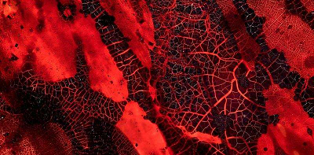

- 热点推荐
- 试用中心 炎症与疾病
- CAR-T/TCR-T细胞治疗
人物访谈
Science：重磅！异种…
JExp Med：科学家找

Nat Nanotechnol：
Nat Neurosci：
2016生物医药产业协
我们为什么会有血液呢？
国家“精准医学研究”
2015年最具影响力
- 最新会议
- 活动专题
- 产业热点
- 全转录组测序数据分析及案例实践班（第
- 2017(第九届)干细胞国际研讨会
- 2017（第二届）癌症、炎症与免疫研讨会
- 2017(第三届)衰老与疾病学术研讨会
- 2017国际生物医药创新（杭州）峰会
- 2017抗衰老医学高峰论坛
- 2017益生菌与健康国际论坛
- 2017代谢组学与转化医学研讨会
- 2017国际创新药产业高峰论坛
- “智”造中国：医药工业4.0与绿色制药高峰
- 2017（第二届）生物医用新材料暨组织修复
- 2017（第五届）非编码RNA研讨会
- 2017（第三届）下一代CAR TCR -T研讨会
- 第三届中国实效研究和循证医学高峰会议
 2013中国矫正骨科技术峰会
2013中国矫正骨科技术峰会- 2016国家自然科学基金数据分析
- 深度解析：癌症和人类微生物组“前世今
- 细胞能量代谢检测技术及应用
- 助力癌症研究：新型癌症成像技术大集合
- 有趣又有料的生物书单（二）
- 为什么一些癌症突然自愈了？
- 2016年SCI影响因子新鲜出炉！（2015年
- 喜讯！FDA批准强生降糖药INVOKAMET
- 2016年SCI影响因子新鲜出炉！（2015年
- 你赞成“人工合成病毒”吗？
- 有趣又有料的书单
- 谈及DNA，仍然只想起双螺旋结构，那
- 2017（第三届）下一代CAR TCR -T研讨会
- 第三届中国实效研究和循证医学高峰会议
- 2013中国矫正骨科技术峰会
- 中国：一个超级DNA测序大国 如今将转
- 百时美PD-1抑制剂再获喜讯，Opdivo-
- 时隔两年，赛诺菲重新提交2型糖尿病药
- 国家谈判目录风向标：第一轮降价品种的
- 中国最赚钱的医药上市公司有哪些？
- FDA推简略新药申请新政 仿制药审批或
- 2017益生菌与健康国际论坛
- 2017代谢组学与转化医学研讨会
- 2017国际创新药产业高峰论坛
- FDA批准吉利德Epclusa上市，又一抗丙
- 2017（第二届）生物医用新材料暨组织修
- 2017（第五届）非编码RNA研讨会
- 2017（第三届）下一代CAR TCR -T研讨会
- 2023年全球黑色素瘤治疗市场将达到
- 2015年SCI影响因子新鲜出炉！（2014年
猜你感兴趣
韩春雨团队论文从《自然》杂志子..
记者今晨从英国《自然》杂志子刊《自..
2017年7月Cell期刊不得不看的亮..
2017年7月30日/生物谷BIOON/---7月份即将..
EBioMedicine：根除HIV有戏！药..
2017年8月2日/生物谷BIOON/---HIV在潜伏..
2017年7月HIV研究亮点进展
2017年7月26日/生物谷BIOON/---人类免疫..
最新课程